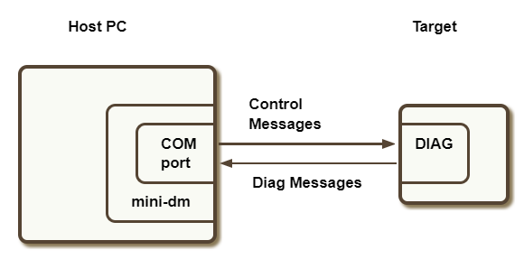

Messaging resources
Overview
This page discusses the tools available for logging debug messages from the DSP.
The DSP can generate messages using the Hexagon SDK's FARF API or through regular IO functions like printf. These messages are sent to a diagnostic (or DIAG) framework present on the DSP, from which they can be collected. They can also be collected via USB with a tool called mini-dm running on the host computer. If the USB port is not connected to collect these messages, the DIAG framework has very low run-time overhead.
The DIAG framework also includes a circular buffer, which allows the most recent messages to be read from crash dumps during debugging.

Optionally, DSP messages can be routed to the CPU in parallel with the DIAG framework, thus allowing logcat to collect DSP messages from the CPU. Routing DSP messages to the CPU has a small but measurable impact on power and thus is not enabled by default.
Depending on the types of FARF messages being used, the user can enable or disable messages at different priority levels, at compile time or run time.
Generating messages
Static FARF
FARF API
The FARF API is defined in ${HEXAGON_SDK_ROOT}/inc/HAP_farf.h. It allows the caller to send diagnostic messages:
FARF(level, msg, ...)
The FARF level allows the user to selectively enable or disable certain types of messages according to their priority level. The following levels are supported and listed in increasing priority:
LOWMEDIUMHIGHERRORFATALALWAYS
Compile-time enablement of static FARF
FARF messages whose compilation is controlled via conditional compilation using the FARF levels are referred as static FARF messages as opposed to run-time FARF, which are always compiled in but activated at runtime, as explained further below.
A FARF level must be set to 1 for FARF macros to be compiled in. For example:
#define FARF_LOW 1
#include <HAP_farf.h>
FARF(LOW, "something happened: %s", (const char*)string);
will result in enabling LOW FARF messages and thus compiling the line above. Executing this line on the cDSP will result in sending a diagnostic message.
The code snipped above generates the following output:
QDSP6/Low [ <source file name>.c 147] 00dd:0c: CDSP: something happened: Example String
In the output above, the portion after CDSP: is the actual string logged by the user. The portion before CDSP: i.e. 00dd:0c: represents 'ThreadId:ProcessID' on the DSP.
Note that FARF_LOW needs to be defined before HAP_farf.h is included. The reason for this approach is that including HAP_farf.h will result in setting default values for each FARF level not already defined. Setting a FARF level after including the header file will result in a warning or error (depending on the compilation flags) for redefining a macro value without undefining it first.
If FARF_LOW is set to 0, as it is by default, the above FARF command will not be compiled in.
When building the Debug variant or with any build defining _DEBUG, the following FARF levels are enabled:
HIGHERRORFATALALWAYS
When building a Release variant, the FARF HIGH level is disabled by default: only ERROR, FATAL, and ALWAYS are enabled by default.
Custom levels
The FARF mechanism also allows users to define their own custom levels. For example:
#include <HAP_farf.h>
#define FARF_MYTRACE 1
#define FARF_MYTRACE_LEVEL HAP_LEVEL_LOW
FARF(MYTRACE, "custom trace in file %s on line %d", __FILE__, __LINE__);
will send this message whenever the FARF LOW level is enabled.
Config file enablement of static FARF
Static FARF messages that are enabled on the DSP can be sent to logcat by following the steps below:
-
Create a
<rpc_hlos_process_name>.farfconfiguration fileAn empty file is sufficient to send to logcat any FARF message that was compiled following the approach described above.
-
Push this file on device on the path specified by [A]DSP_LIBRARY_PATH
For example, if your CPU executable name is calculator, you need to create a calculator.farf file in the path specified by DSP_LIBRARY_PATH. Concretely, assuming DSP_LIBRARY_PATH includes /vendor/lib/rfsa/dsp/sdk/, a file enabling FARF messages at all levels to be routed to logcat can be created with just one command line on your connected host:
adb shell "touch /vendor/lib/rfsa/dsp/sdk/calculator.farf"
printf
printf is supported in its standard prototype.
printf messages sent to stdout are converted by the Hexagon run-time into static FARF messages of HIGH priority. printf messages sent to stderr are converted to static FARF messages of ERROR priority.
Run-time FARF
In addition to static FARF messages that are enabled or disabled at compile time, the SDK supports run-time FARF messages, which are always compiled in, but not sent to the DIAG framework unless enabled at run-time. Run-time FARF messages that are not enabled add negligible run-time overhead.
Run-time FARF messages are used in a similar way to static FARF messages, but with "RUNTIME_" prefixed to the message level in the FARF invocation:
#include <HAP_farf.h>
FARF(RUNTIME_LOW,"Run-time Low FARF message");
FARF(RUNTIME_MEDIUM,"Run-time Medium FARF message");
FARF(RUNTIME_HIGH,"Run-time High FARF message");
FARF(RUNTIME_ERROR,"Run-time Error FARF message");
FARF(RUNTIME_FATAL,"Run-time Fatal FARF message");
Just as with static FARF, the level allows to specify which FARF messages to enable or not. The user can set run-time FARF levels in one of two ways:
- Adding a config file to the HLOS file system in the [A]DSP_LIBRARY_PATH
- Calling an API from the HLOS application code
Config file enablement of run-time FARF
The process for enabling run-time FARF messages via config files is similar to the process for routing static messages to logcat using config files but the contents of the config <rpc_hlos_process_name>.farf file is also relevant as is explained further below. The presence of the file will result, for the levels enabled, in:
- enabling run-time FARF messages
- routing run-time (as well as static) FARF messages to logcat (in addition to sending them to the DIAG framework)
Run-time FARF messages can be sent to logcat by following the steps below:
-
Create a
<rpc_hlos_process_name>.farfconfiguration file -
Edit this file with a mask value to enable specific run-time FARF levels
-
Push this file on device on the path specified by [A]DSP_LIBRARY_PATH
For example, if your CPU executable name is calculator, you need to create a calculator.farf file in the path specified by DSP_LIBRARY_PATH. Concretely, assuming DSP_LIBRARY_PATH includes /vendor/lib/rfsa/dsp/sdk/, a file enabling run-time FARF messages at all levels to be routed to logcat can be created with just one command line on your connected host:
adb shell "echo 0x1f > /vendor/lib/rfsa/dsp/sdk/calculator.farf"
The content of the config file is formatted as follows:
<hex_mask> [comma-separated filenames (optional)]
The mask has one bit for each level:
0x01 - LOW0x02 - MEDIUM0x04 - HIGH0x08 - ERROR0x10 - FATAL
For example
-
To route all levels of run-time messages to logcat (in addition to the DIAG framework) for all files in the process, use:
0x1f -
To route all levels of run-time messages but
LOWto logcat for the filetest.conly, use:0x1e test.c -
To route all levels of run-time messages to logcat for the files
test.candfoo.c, use:0x1f test.c,foo.c
Programmatic enablement of run-time FARF
You can also enable run-time FARF programmatically with the following API available from HAP_farf.h:
int HAP_setFARFRuntimeLoggingParams(unsigned int mask, const char* files[], short numberOfFiles);
This approach follows the same format as that used in <rpc_hlos_process_name>.farf config files:
- a mask must be provided to enable or disable specific FARF levels
- a list of file names may be provided to only enable FARF messages for specific files
- to enable FARF for all files, use a
NULLpointer for the file array and0for the number of files being specified
- to enable FARF for all files, use a
Unlike the enablement of run-time messages via config file, this approach enables messages to be routed to the DIAG framework but not to logcat.
To see an illustration of this approach, please refer to the HAP example.
Capturing messages
mini-dm
mini-dm is a tool that queries and displays diagnostic messages generated by the Hexagon DSP. The tool is located under tools/debug/mini-dm.
Connecting mini-dm on Linux
The SDK includes versions of mini-dm for Ubuntu versions 16 and 18.
If you only have one connected device, simply running mini-dm will connect the tool to your device automatically:
$ mini-dm
Running mini-dm version: 3.3
Completed processing command line ---
Connecting to the only usbport connected
mini-dm is waiting for a DMSS connection...
DMSS is connected. Running mini-dm...
------------Mini-dm is ready to log-------------
If you have multiple connected devices, you need to indicate which device to connect mini-dm to, by using the --usbport option followed by the relevant port number. In order to figure out which port to use, simply run adb devices -l:
$ adb devices -l
List of devices attached
5449b015 device usb:1-10 product:msmnile model:msmnile_for_arm64 device:msmnile transport_id:11
f09566c8 device usb:2-7 product:kona model:Kona_for_arm64 device:kona transport_id:12
In the example above, port 1-10 should be used to connect to device 5449b015 (an SM8150), and port 2-7 should be used to connect to device f09566c8 (Kona). To connect to the Kona device for example, simply run:
$ mini-dm --usbport 2-7
Running mini-dm version: 3.3
Completed processing command line ---
Connecting to usbport 2-7
mini-dm is waiting for a DMSS connection...
DMSS is connected. Running mini-dm...
------------Mini-dm is ready to log-------------
Note: The usbport will be expressed differently if the device is connected to Linux via one or more USB hubs. A . in a port number represents a USB hub. For example, if the device is connected via two USB hubs, its USB port number be reported as follows:
device usb:a-b.c.d product:<device>
This representation is interpreted as follows:
* First USB hub is connected to port `b` of USB bus `a`
* Second USB hub is connected to port `c` of first USB hub
* Device is connected to port `d` of the second USB hub
In this case, mini-dm will expect the port a-b.c.d to be passed as an argument to connect to this device.
For example, if adb devices -l prints the port number in the format device usb:2-10.1, run mini-dm as follows:
$ mini-dm --usbport 2-10.1
Connecting mini-dm on Windows
mini-dm on Windows differs from Linux in that it cannot detect automatically the port to connect to and that adb doesn't return the port numbers of the connected devices either.
Instead, the SDK includes the %HEXAGON_SDK_ROOT%\utils\scripts\com_finder.py script that prints a listing of all the active USB ports to which a Qualcomm device is connected:
usage: com_finder.py [-h] [-v] [-i]
optional arguments:
-h, --help show this help message and exit
-v prints verbose information
-i enable debugging info
For example:
> scripts\com_finder.py
Qualcomm HS-USB Com ports found:
COM15
You would then connect mini-dm to the device using the following command:
> mini-dm --usbport 15
Logging options
Many mini-dm command line options are specific to the sensor subsystem, and should not be used by the general SDK user. Following are the options useful to the general SDK user.
-
--formatControl the output format of diagnostic messages. Default:
"[%05d{SS}/%02d{MASK}] %02d{M}:%02d{S}.%03d{MS} %s{STR} %04d{L} %s{F}" -
--show_color_schemesShow the available color schemes for diagnostic messages. Default: false
Note that colors are only supported on Windows.
-
--color_scheme <color_scheme_number>Set color scheme for diag message output. Default: 0 (no color)
Color schemes 1-5 highlight FARF messages in different colors depending on their levels.
Note that colors are only supported on Windows.
To enable filtering of logs, mini-dm supports the following options which can be used along with other logging options. The search pattern may include one or more strings separated by the & or |. The & operator defines a pattern where all strings must be present and the | operator a pattern where only one of the strings must be present. No filter is applied by default.
-
--filter-in "pattern"Only keep log messages matching the pattern.
-
--filter-out "pattern"Discard log messages matching the pattern.
For example:
-
To use filter-in and filter-out options, use:
> mini-dm --usbport 7 --filter-in "cdsp" --filter-out "power"This will display logs containing keyword
cdspand not keywordpower. -
To use filter-in option with
&, use:> mini-dm --usbport 7 --filter-in "cdsp & power"This will display only the logs containing both keywords
cdspandpower.
The following mini-dm options can be used to enable/disable logging from the sensor subsystem.
-
--enable_sensor_ssids <true/false>Enable logging from sensor subsystems. If true, logging from extended SNS subsystems (FRAMEWORK, PLATFORM, SENSOR INT and SENSOR EXT) are enabled, along with the default subsystems, QDSP6 and SNS.
-
--subsystem_masks: <mask_value1,mask_value2,...>Control the logging mask for the subsystems enabled with
--enable_sensor_ssids. This options accepts 6 comma-separated log mask values for the 6 subsystems respectively. -
--default_ss_mask: <mask_value>Configure the default log mask for all subsystems using this option. Default value of default log mask for all subsystems is
0x1F, which enables all log levels. This option can also be used to configure the log mask for the default subsystems.
For example:
-
To configure default log mask for default subsystems, use:
> mini-dm --usbport 7 --subsystem_masks 0x7,0x7This will allow messages from the default subsystems, only with log levels LOW, MEDIUM and HIGH.
-
To enable sensor subsystems and configure default log masks for all, use:
> mini-dm --usbport 7 --enable_sensor_ssids --default_ss_mask 0x7This will allow messages from all sensor and default subsystems, only with log levels LOW, MEDIUM and HIGH.
-
To enable sensor subsystems and configure different log masks for different subsystems, use:
> mini-dm --usbport 7 --enable_sensor_ssids --subsystem_masks 0x0,0x1,0x2,0x4,0x8,0x10,0x1FThis will allow the following messages from the different subsystems.
QDSP6 - No messagesSNS - LOWSNS FRAMEWORK - MEDIUMSNS PLATFORM - HIGHSNS SENSOR INT - ERRORSNS SENSOR EXT - FATAL
logcat
Once messages are enabled to be routed to logcat, the FARF and printf messages are visible with logcat. The logcat filtering option -s adsprpc allows to display only those messages generated using FARF or printf from any DSP (ADSP/CDSP/SLPI/MDSP) since all these messages are tagged with adsprpc:
adb logcat -s adsprpc
A sample output should look like this:
05-25 19:25:57.275 4442 4443 W adsprpc :
calculator_imp.c:17:0x40a6:=============== DSP: sum result 499500 ===============
Note: The FastRPC logging framework may not flush the last few messages during a crash or exit when the application opens a remote session without domains. To avoid this, follow the approach used by all Hexagon SDK examples and use the multi-domain feature when initiating FastRPC calls.